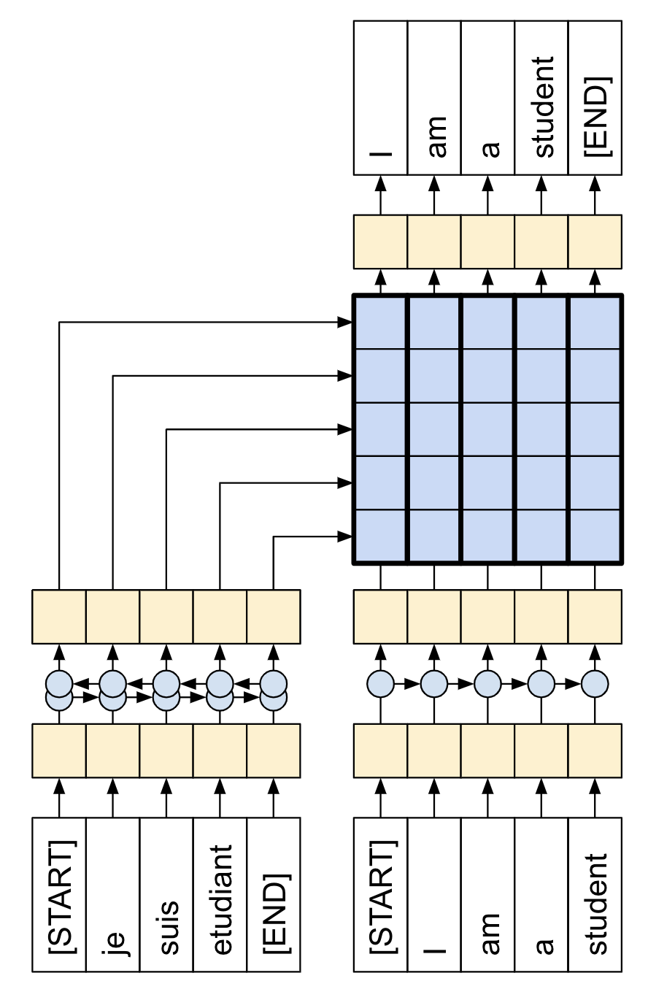
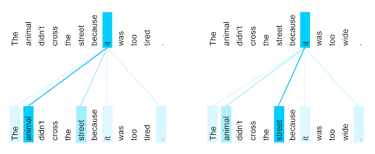

7.4 Transformer 翻译模型
使用 Transformer 和 Keras 进行神经机器翻译！
创建日期: 2025-04-15
本教程演示如何创建和训练序列到序列的 Transformer 模型，它将葡萄牙语翻译成英语。Transformer 最初在论文 Attention is all you need 中提出，可以查看《深度学习综合指南》第 9.4 节 Transformer 论文 的内容。
Transformer 是一种深度神经网络，它利用自注意力机制取代了 CNN 和 RNN 。自注意力机制让 Transformer 能够轻松地在输入序列之间传递信息。
正如 Google AI 博客文章 中所解释的那样：
机器翻译的神经网络通常包含一个编码器，用于读取输入句子并生成其表示。然后，解码器参考编码器生成的表示，同时逐字生成输出句子，同时。Transformer 首先为每个单词生成初始表示或嵌入，然后，它使用自注意力机制聚合来自所有其它单词的信息，根据整个上下文为每个单词生成一个新的表示，由下图填充的球表示。然后对所有单词并行重复此步骤多次，依次生成新的表示：

需要消化的内容很多，本教程的目标是将其分解为易于理解的部分。在本教程中，我们将：
-
准备数据；
-
实现必要的组件：
- 位置嵌入；
- 注意力层；
- 编码器和解码器。
-
构建和训练 Transformer ；
-
生成翻译；
-
导出模型。
为了充分利用本教程，如果您了解 文本生成 和 注意力机制 的基础知识，这将很有帮助。
Transformer 是一种序列到序列的编码器-解码器模型，类似于 第 7.3 节 Seq2Seq 翻译模型 中的模型。单层 Transformer 需要编写更多代码，但与编码器-解码器 RNN 模型几乎相同，如下图所示展示带有注意力的 RNN 模型：
唯一的区别是 RNN 层被替换为自注意力层。本教程构建了一个 4 层 Transformer，它更强大，但从根本上来说并不更复杂。如下图展示单层 Transformer 模型：

训练完模型后，我们可以输入葡萄牙语句子并返回英语翻译。可以看到生成的可视化注意力权重：
7.4.1 为何如此重要
-
Transformer 擅长对序列数据（例如自然语言）进行建模。
-
与循环神经网络 (RNN) 不同，Transformer 是可并行化的。这使得他们在 GPU 和 TPU 等硬件上非常高效。主要原因是 Transformer 用注意力机制取代了循环，计算可以同时进行。层输出可以并行计算，而不像 RNN 那样串联计算。
-
与 RNN（如 Seq2Seq）或卷积神经网络 (CNN) 不同，Transformer 能够捕获输入或输出序列中远距离位置之间的上下文和依赖。因此，长连接可以被学习。在每一层中注意力机制允许每个位置访问整个输入，而 RNN 或者 CNN ，信息需要经过许多处理步骤才能移动很长距离，这使得学习变得困难。
-
Transformer 不对数据中的时空关系做任何假设，这对于处理一组对象非常理想。
下图展示在英语到法语上训练的Transformer 的第 5 层到 第 6 层，单词 "it" 的编码器自注意力分布（八个注意力头之一）：
